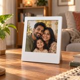

Upload the photo you want standing up
A PNG with the background already removed gives you a shaped standee that follows the subject. A JPG is treated as a full rectangle, which is fine for a framed or polaroid-style standee.
Free photo-to-standee preview · runs in your browser
Build a photo standee with a slot and base, sized 8-15 cm. Create and download it free in your browser.
Upload an image to see the finished size and the print resolution.
Three steps
A PNG with the background already removed gives you a shaped standee that follows the subject. A JPG is treated as a full rectangle, which is fine for a framed or polaroid-style standee.
Choose 8, 10 or 15 cm. The maker keeps your aspect ratio, so a tall portrait stays tall, and it draws the base at the same scale so the proportions you see are the proportions you get.
The download is a transparent 300 DPI PNG you can take to any acrylic printer. If you would rather have it made, use the quote form and a person replies with options and a price.
Reference
Standee sizes are given as the longest finished side, not the height. A wide landscape design and a tall portrait can share the same long side and still feel completely different on a desk.
| Long side | Works well for | Watch out for |
|---|---|---|
| 8 cm | One small character, a pet head, a simple logo | Fine detail disappears; crop tight to the subject |
| 10 cm | Portraits, pet photos, the most versatile desk size | Neck and limb gaps get fragile if they are very thin |
| 15 cm | Couples, groups, wide scenes, gift sets | Top-heavy designs need a wider base or they tip |
Human follow-up, not a checkout
We run small acrylic batches by hand: keychains, standees and fridge magnets. Send us the design you just built and we will reply with sizes, options and a price before anything is paid.
No card is taken here. Proof first, PayPal invoice only after you approve it.
Not sure about the size? Send the file anyway and ask — that is what the reply is for.
Questions
An acrylic standee is a flat printed acrylic cut-out that slots into a small base so it stands upright on a desk or shelf. The artwork is printed on one side of the acrylic and the outline is cut to the shape of the design.
Measure the longest side of the finished piece. 8 cm suits a single small character, 10 cm is the most versatile size for a portrait or pet photo, and 15 cm works for couples, groups or wide scenes but needs a wider base so it does not tip.
Yes. The maker and the PNG download are free and need no account, no email and no watermark. Your image is decoded and rendered inside your own browser and is not uploaded to us.
The preview shows proportions, crop and where the base sits, so use it to check the layout. It does not show acrylic thickness, edge polish or final print colour. If you order, a person checks the file and sends a proof before anything is paid.
We make small custom acrylic runs by hand. Send the design through the quote form on this page and a person replies with sizes, options and a price. No card is taken on this site.
30 tools

Polaroid frame makerPhoto GiftsNo tool matches that word yet. Browse all 30 tools.